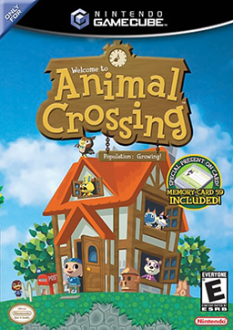

Simulation · 2002
Animal Crossing
Real-time chores, a loan shark raccoon, and a village that missed you.

Cover: Wikipedia: Animal Crossing (video game)
Facts
- Released
- 2001-12-15
- Genre
- Life Sim
- Category
- Simulation
- Platforms
- Nintendo
- Developers
- Nintendo Entertainment Analysis & Development
- Publishers
- Nintendo